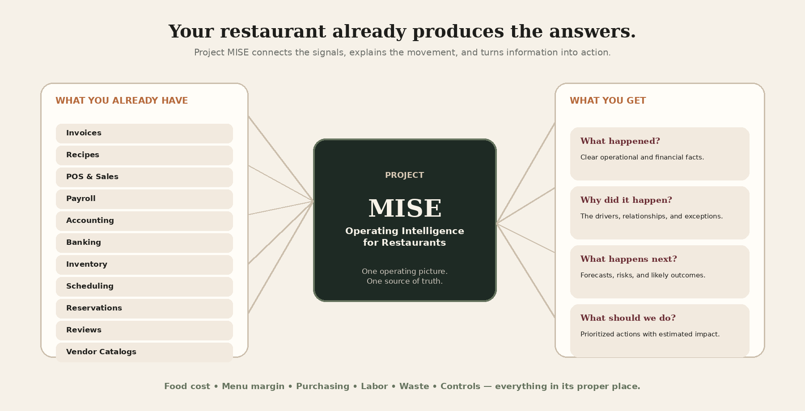

Food Cost
Know what each recipe and plate costs today—not six months ago.
Restaurant operating intelligence
Project MISE turns invoices, recipes, menus, purchasing, labor, sales, and operating data into clear decisions that protect your margins.
Food cost. Menu margin. Purchasing. Labor. Waste. Controls.
Everything in its proper place.
The reality
Corporate groups employ controllers, procurement analysts, menu strategists, financial teams, and loss-prevention staff. Independent operators make the same decisions alone—between service, payroll, vendor calls, and the next emergency.

Complete operating visibility
Know what each recipe and plate costs today—not six months ago.
See which items drive contribution and which add complexity without enough return.
Track price movement, vendor exposure, credits, substitutions, and buying patterns.
Connect staffing, prep, dayparts, sales, and productivity to find real opportunities.
Understand theoretical usage, actual movement, stockouts, spoilage, and overproduction.
Surface unusual refunds, voids, discounts, invoices, cash movement, and exceptions.
Your restaurant operating team
Owns your financial picture. Food cost, prime cost, variance, cash flow, and owner reporting.
Protects quality and consistency. Recipes, yields, portions, prep, substitutions, and product standards.
Optimizes the menu mix. Menu engineering, pricing, contribution, complexity, and lifecycle.
Finds better pricing and better terms. Vendors, bids, pack sizes, credits, ordering, and price changes.
Aligns labor with demand. Staffing, productivity, prep labor, dayparts, and throughput.
Protects the business. Voids, comps, refunds, cash controls, shrink, and unusual activity.
One team. One source of truth. Clear decisions. Behind these roles is a coordinated system of specialized software agents working from your restaurant’s own data.
How Project MISE works
Invoices, menus, recipes, POS, payroll, inventory—upload or connect it. We accept it all.
Your data is organized, normalized, and connected into a restaurant-specific model.
Changes, trends, exceptions, risks, and margin opportunities become visible.
Specialized intelligence connects the dots and prepares clear recommendations.
Review, approve, assign, and act with context and confidence.
Your daily operating briefing
Illustrative data. Actual results vary by restaurant.
Our mission
Restaurant owners should not have to choose between operating on instinct and hiring an executive team they cannot afford.
Project MISE exists to make restaurant financial and operating intelligence accessible to owners, chefs, managers, and families carrying the weight of the business every day.
We are not building technology for technology’s sake.
We are building a practical system that helps restaurant owners protect what they built, keep more of what they earn, and make decisions with greater confidence.
Twenty years in the making
Two decades ago, MisEnSoft connected recipe costing with supplier data before the technology was ready to make the process simple. The vision was right. The tools were not.
Today, modern data systems and intelligent automation make the original vision possible at a much larger scale. Project MISE is not the revival of an old software product. It is the completion of an unfinished mission—a practical operating intelligence system built for independent restaurants.
Founding restaurant program
We are preparing a small design-partner program for operators who want direct input into the first commercial version of Project MISE. Founding restaurants receive founding pricing, direct input on product development, early access to new features, and priority onboarding and support.